En está clase hicimos la introdución a los circuitos de manera practica, elaboramos 4 circuitos los cuales fueron:
Circuito Simple
Aquí se muestra un ejemplo de un circuito muy simple el cual solo está compuesto por la fuente de alimentacion que es de 9V, una resistencia y un LED. En la imagen adjunta se muestra la formula para obtener la resistencia adecuada para el componente LED.
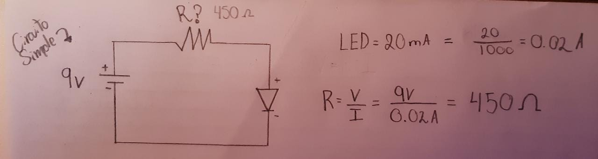El ejemplo hecho en el laboratrio cuenta con dos resistencias ya que no contabamos con una específica para el ejmplo, por lo cual utilizamos dos para cumplir con el cálculo.
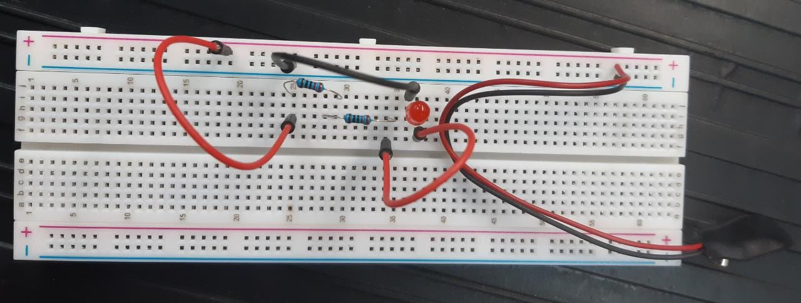Circuito en serie
Aquí se muestra un ejemplo de un circuito en serie
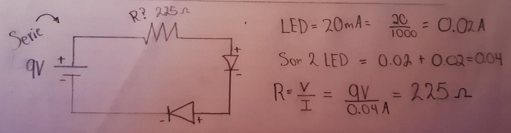 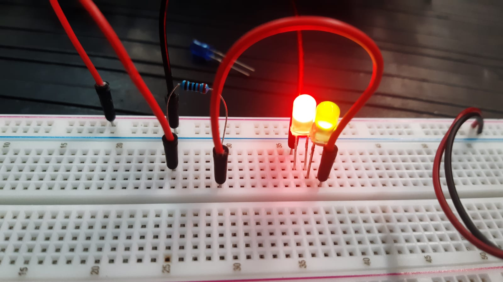Circuito paralelo
Aquí se muestra un ejemplo de un circuito paralelo
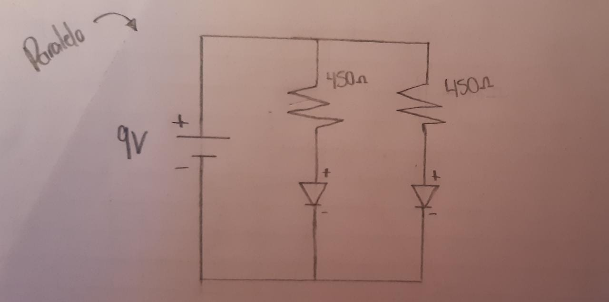 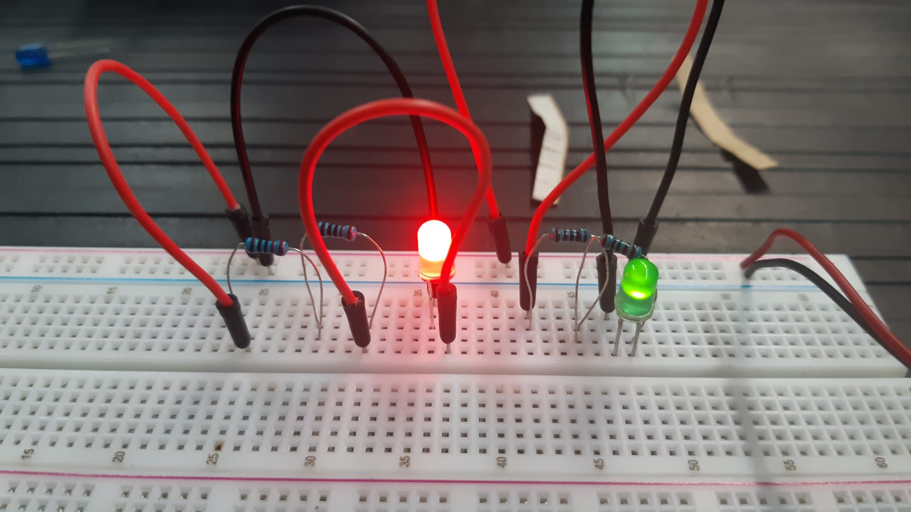Este es otro ejemplo de un circuito en paralelo, los dos led estan en paralelo tomando la ennergía de la fuente
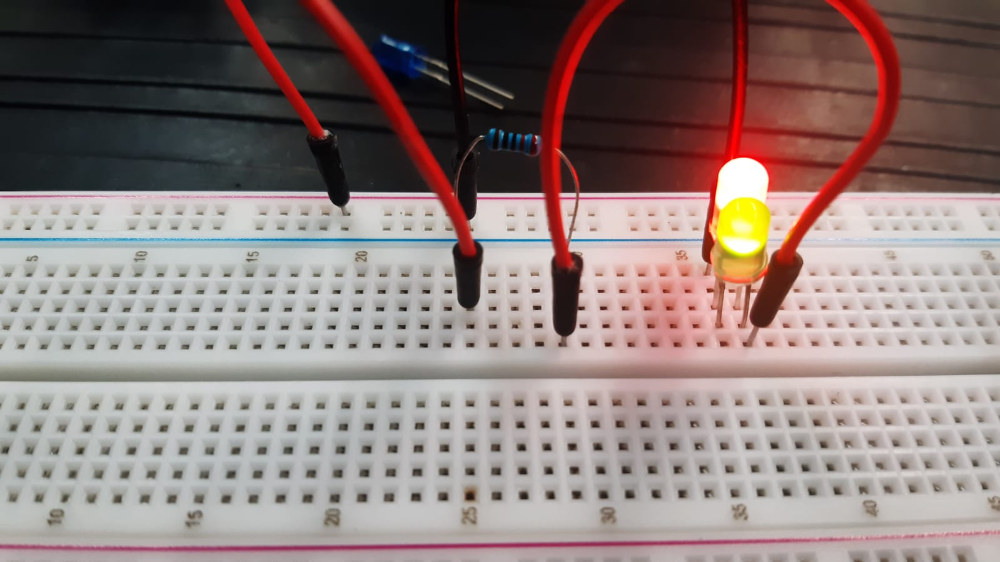Circuito Simple con pulsador
Aquí se muestra un ejemplo de un circuito simple con un pulsador
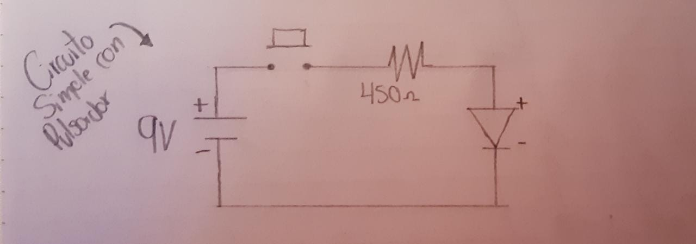En está clase continuamos con la creación de circuitos de manera practica. Todos los circuitos realizados en este laboratorio contenían un regulador de voltaje 7805CT obteniendo como resultado 5V.
Diagrama
Partiendo de este diagrama, lo primero que realizamos fue un circuito "AND" y "OR" sin utilzar una compuerta and 7408 o una compuerta or 7432. Posteriormente realizamos lo los mismos circuitos pero esta vez utulizando las compuertas logicas.
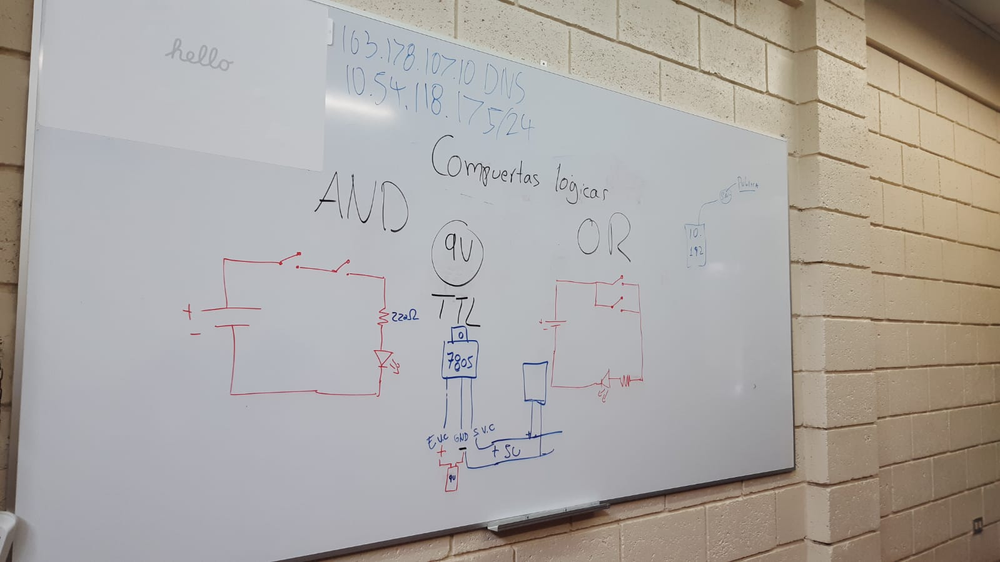AND
Aquí se muestra un ejemplo del circuito AND sin utilizar todavia la compuerta logica. Como se muestra en la imagen, para que el circuito se complete y la luz led encienda se necesita presionar los dos pulsador para satisfacer la condición "AND"
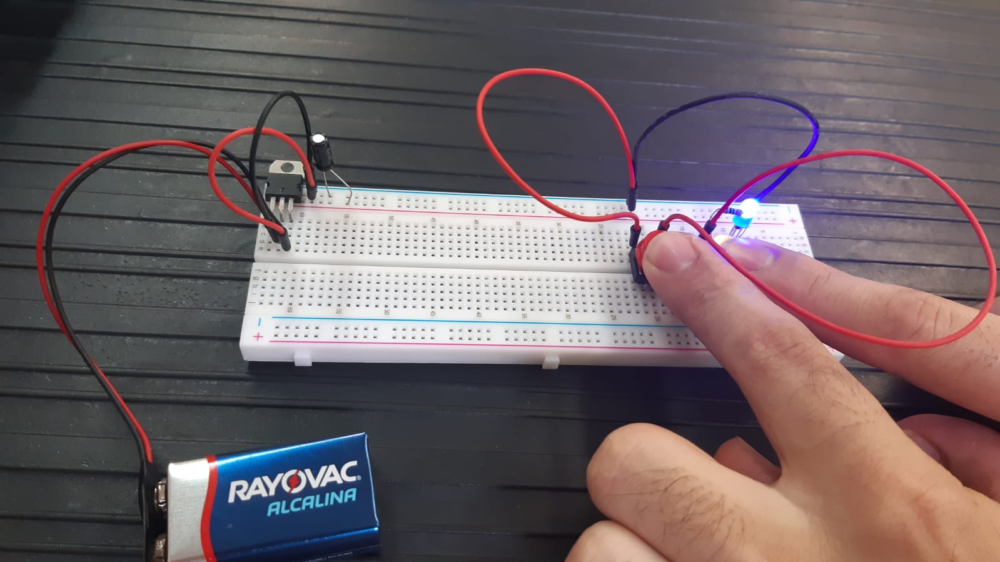OR
Aquí se muestra un ejemplo del circuito OR sin utilizar todavia la compuerta logica. Como se muestra en la imagen, para que el circuito se complete y la luz led encienda se necesita presionar uno de los dos pulsadores para satisfacer la condición "OR"
Cicuito "OR" solo presionando el pulsador amarillo
Cicuito "OR" solo presionando el pulsador rojo
AND (con compuerta)
Aquí se muestra un ejemplo del circuito AND utilizando la compuerta logica. Como se muestra en la imagen, para que el circuito se complete y la luz led encienda se necesita presionar los dos pulsador para satisfacer la condición "AND" 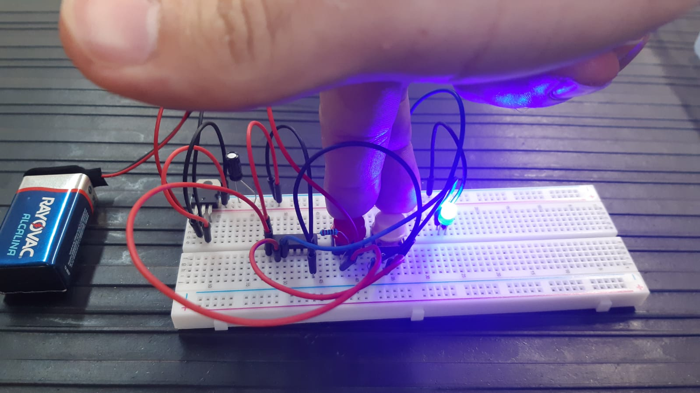OR (con compuerta )
Aquí se muestra un ejemplo del circuito OR utlizando la compuerta logica. Como se muestra en la imagen, para que el circuito se complete y la luz led encienda se necesita presionar uno de los dos pulsadores para satisfacer la condición "OR"
Presionando el pulsador amarillo
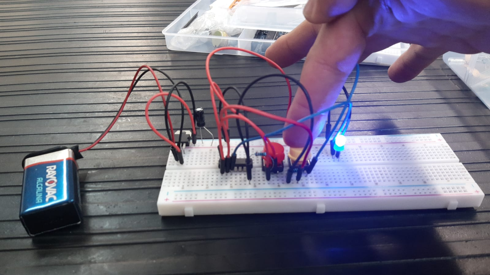Presionando el pulsador rojo
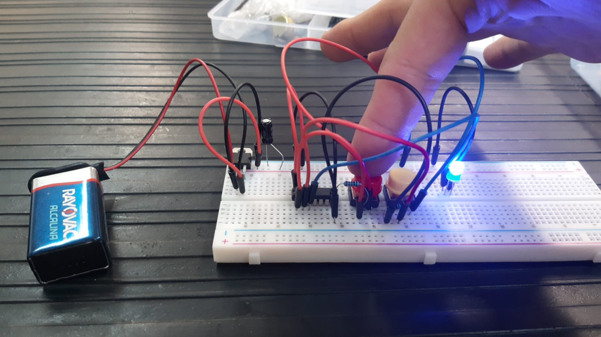Circuitos de Funciones
Realizamos un circuito basado en dos funciones brindadas por el profesor, las cuales tuvimos que simplificar para despues realizar el circuito y realizarlo en la protoboard.
Funcion 1 (Con solo pulsador X/rojo)
Funcion 1 (Presionando pulsadador X y Y al mismo tiempo)
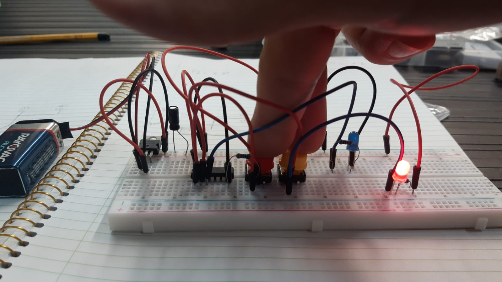Funcion 2.
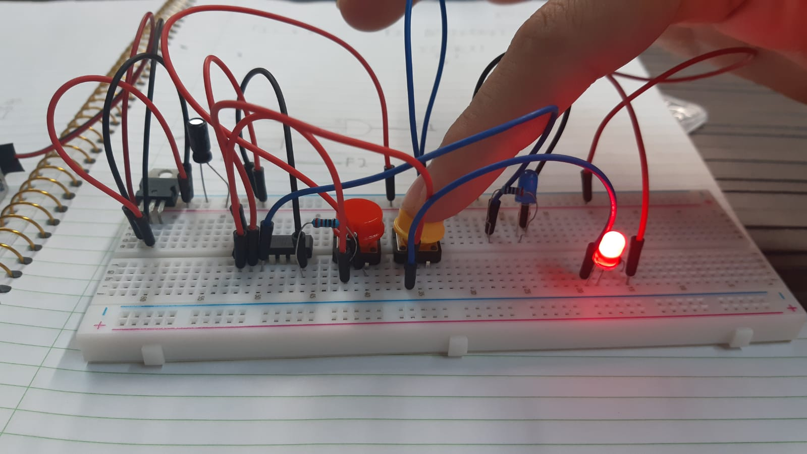En este laboratorio aplicamos la teoría vista en clases anteriores de circuitos combinacinales de forma practica. Todos los circuitos realizados en este laboratorio contenían un regulador de voltaje 7805CT obteniendo como resultado 5V.
Diagrama (Medio sumador)
Tomando como base este diagrama de medio sumador realizamos el ejemplo del circuito.
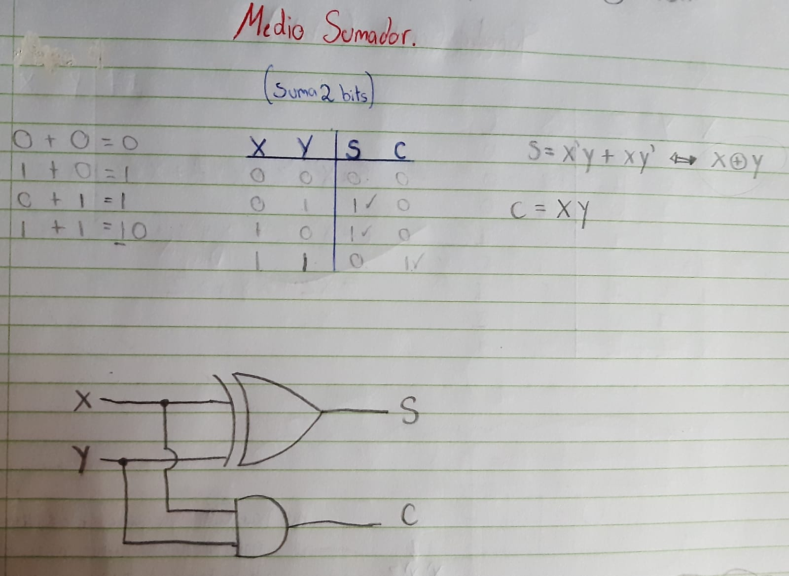Aquí se muestra un ejemplo del diagrama anterior del medio sumador. En este circuito utilizamos una compuerta AND y XOR
Diagrama (Sumador completo)
Tomando como base este diagrama de sumador completo realizamos el ejemplo del circuito.
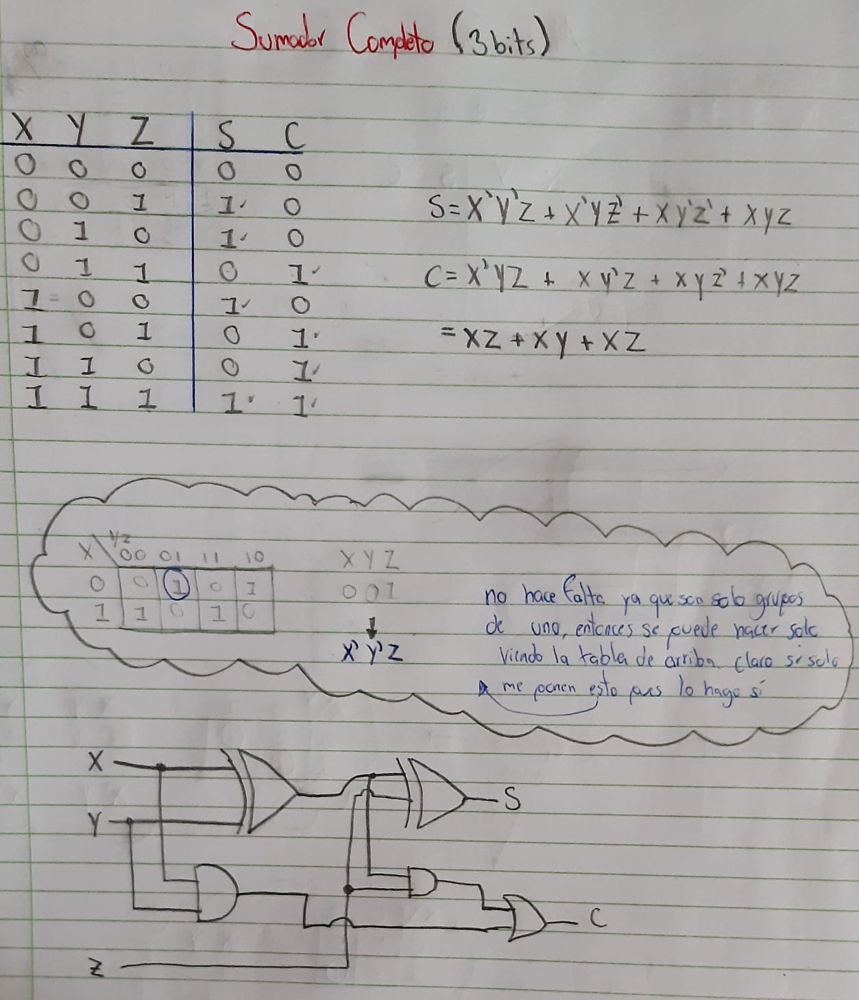Aquí se muestra un ejemplo del diagrama anterior del sumador completo. En este circuito utilizamos una compuerta AND y XOR
Diagrama (Restador binario)
Tomando como base este diagrama de restador binario realizamos el ejemplo del circuito.
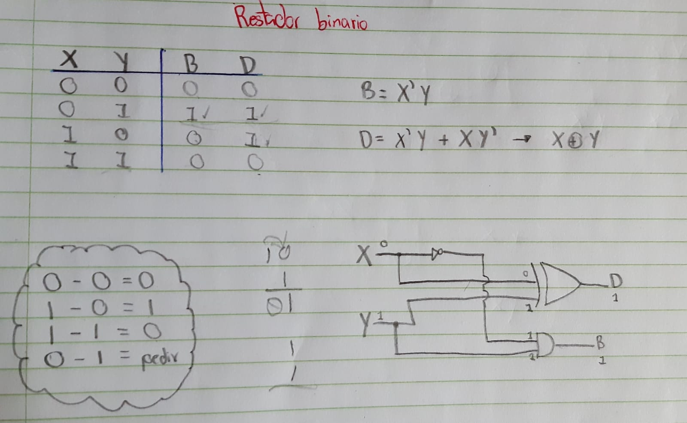Aquí se muestra un ejemplo del diagrama anterior del restador binario. En este circuito utilizamos una compuerta NOT, AND y XOR
En este laboratorio se realizó la conexión entre el controlador(Previamente ensamblado siguiendo los pasos del profesor y con el codigo cargado) y el "Puente H".
• Un Puente en H es un circuito electrónico que generalmente se usa para permitir a un motor eléctrico DC girar en ambos sentidos, avance y retroceso. Son ampliamente usados en robótica y como convertidores de potencia.
• El motor DC 12V es un motor que sirve para diversas aplicaciones, tiene una alimentación de 12V y puede generar revoluciones de hasta 5300 RPM
Seguidamente se alimento al "Puente H" con 5v el cual a su vez alimentaba a la protoboard con el controlador.
Se utizó el codigo cargado en el controlar el cual encendia y apaga un led repetitivamente esto con el fin de observar al motor DC en movimiento el cual fue el obectivo del laboratorio.
A continuación se muestra el video donde se muestra el laboratorio: